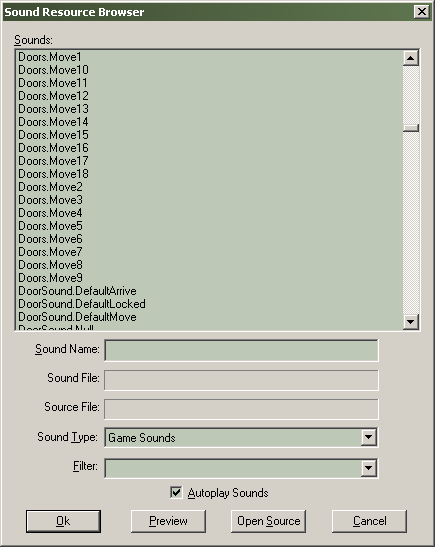

Dialogs: Sound Browser
The Sound Resource Browser can be used to find sound resources within the game resource directories.

Sounds
An alphabetical listing of the available sounds, according to the current filter settings described below.
Sound Name
The name of the currently selected sound.
Sound Type
Lets you choose between the type of sound resources to list, Game Sounds and Raw. Game Sounds are entries in the sound script files in the scripts directory. Raw sounds are the files on disk that the scripts refer to, in either .wav or .mp3 format.
Filter
Type in text here will filter the results that appear in the sounds list. For example, by typing in "door" in the Filter field, any sound resource with the word "door" in it will show in the sounds list. Sounds without "door" in their name would not appear.
Autoplay Sounds
When checked, any sound selected in the sounds list will play.
Preview
When Autoplay Sounds is not checked, press this button can be used to play a sound selected in the sound list.
Open Source
Opens the script file that contains the sound entry selected in the sounds list.
OK
Exits the Sound Browser. If the Sound Browser was launched from a Object Properties dialog, the selected will be entered into the Object Properties.
Cancel
Exits the Sound Browser.
Related Topics
© 2004 Valve Corporation. All rights reserved. Valve, the Valve logo, Half-Life, the Half-Life logo, the Lambda logo, Steam, the Steam logo, Team Fortress, the Team Fortress logo, Opposing Force, Day of Defeat, the Day of Defeat logo, Counter-Strike, the Counter-Strike logo, Source, the Source logo, Hammer and Counter-Strike: Condition Zero are trademarks and/or registered trademarks of Valve Corporation. Microsoft and Visual Studio are trademarks and/or registered trademarks of Microsoft Corporation. All other trademarks are property of their respective owners.